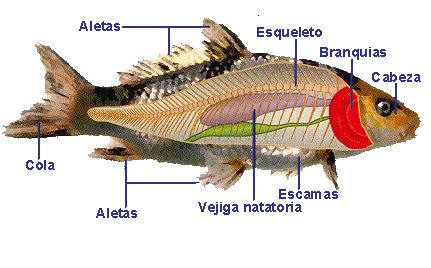
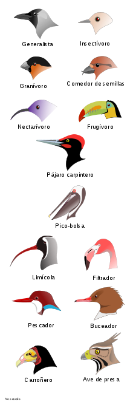
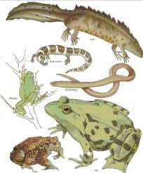
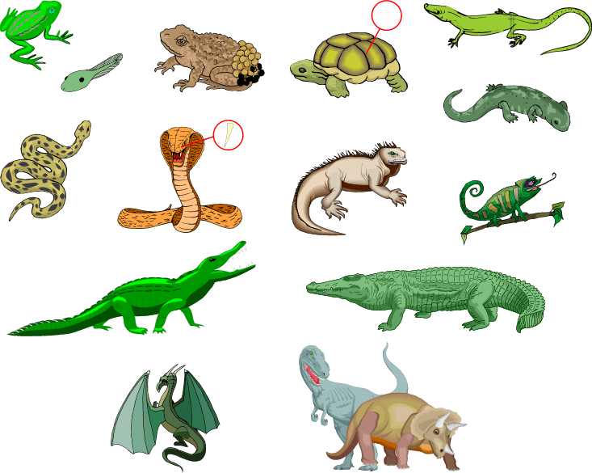
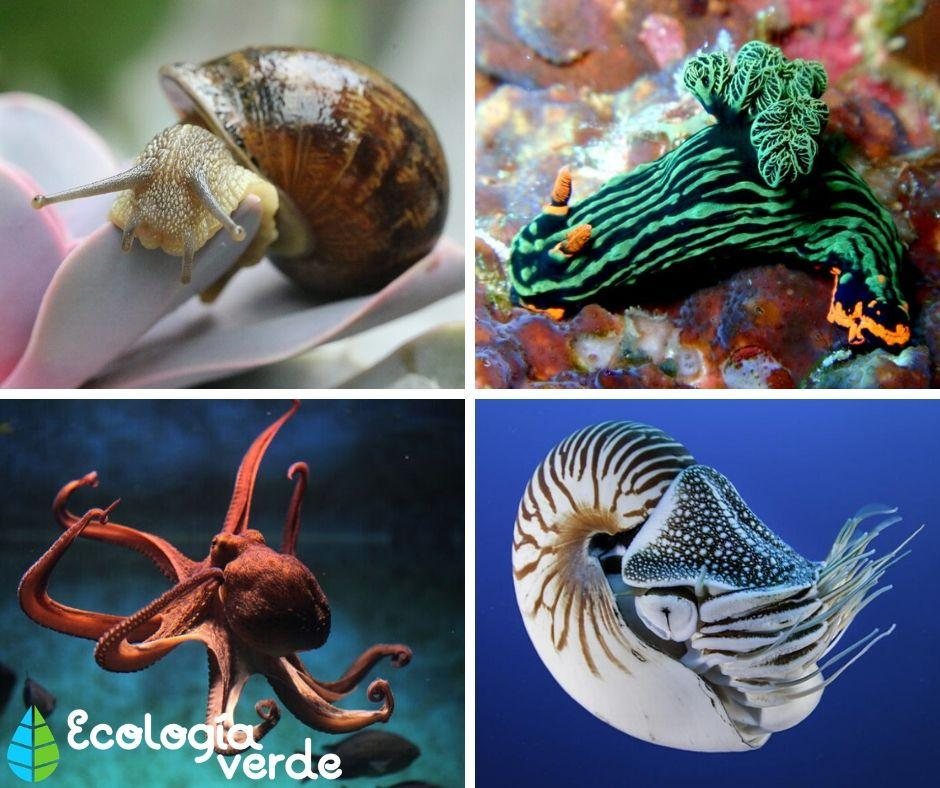
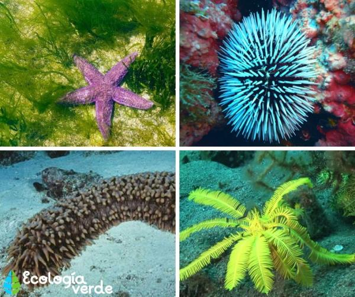
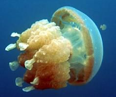
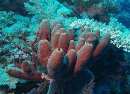

ANIMALES DEL PLANETA TIERRA
VERTEBRADOS
1. MAMIFEROS
Los mamíferos son animales vertebrados, es decir, que su cuerpo está formado por huesos al igual que el de los seres humanos, y los otros animales de la naturaleza, la diferencia es que ellos tienen pelo por todo su cuerpo, su respiración es a través de los pulmones

2. PECES
Los peces son animales vertebrados primariamente acuáticos, generalmente ectotérmicos y con respiración por branquias

3. AVES
Las aves son animales vertebrados, de sangre caliente, que caminan, saltan o se mantienen solo sobre las extremidades posteriores, mientras que las extremidades anteriores han evolucionado con el paso del tiempo

4. ANFIBIOS
Los anfibios son una clase de animales vertebrados anamniotas, tetrápodos, ectotérmicos, con respiración branquial durante la fase larvaria y pulmonar al alcanzar el estado adulto. A diferencia del resto de vertebrados, se distinguen por sufrir una transformación durante su desarrollo

5. REPTILES
Los reptiles, son un grupo de animales vertebrados amniotas provistos de escamas epidérmicas de queratina

INVERTEBRADOS
1. ARTROPODOS
Los artrópodos constituyen el filo más numeroso y diverso del reino animal. El grupo incluye animales invertebrados dotados de un esqueleto externo y apéndices articulados; los insectos, arácnidos, crustáceos y miriápodos, entre otros

2. MOLUSCOS
Los moluscos conforman uno de los grandes filos del reino animal. Son invertebrados protóstomos celomados, triblásticos de simetría bilateral no segmentados, de cuerpo blando, desnudo o protegido por una concha

3. EQUINODERMOS
Los 'equinodermos' son un filo de animales deuteróstomos exclusivamente marinos y bentónicos. Su nombre alude a su exclusivo esqueleto interno formado por osículos calcáreos. Poseen simetría pentarradial secundaria, caso único en el reino animal, y un sistema vascular acuífero característico.

4. CELENTEROS
Los radiados, celentéreos o celenterados son un taxón parafilético empleado históricamente para agrupar a los más primitivos animales eumetazoos, habitualmente en oposición a los pertenecientes a Bilateria, es decir, enfatizando la presencia de una simetría radiada en vez de bilateral en el adulto.

5. PORIFEROS
Los poríferos, también conocidos como esponjas o esponjas de mar, son un filo de animales acuáticos que se encuentran enclavados dentro del subreino Parazoa. Son mayoritariamente marinos, sésiles y carecen de auténticos tejidos
